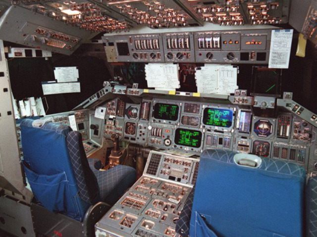

The flight deck of the SAIL space shuttle simulator, regarded by many of those who used it as the most accurate simulation of the shuttle experience available at the time

Along with the immense concentration of computing power required to run complex space flight simulations!